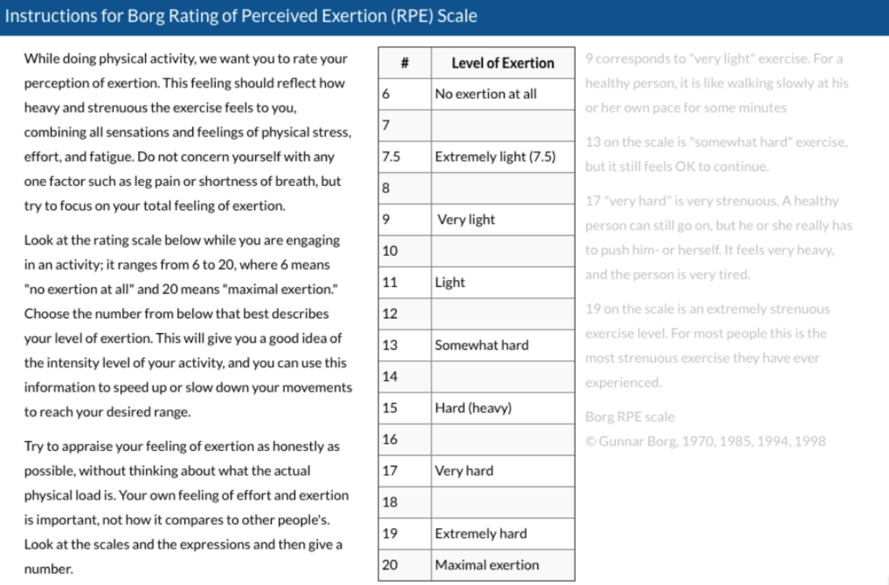

FAQ

Q: Is it safe to exercise while pregnant?
A: Yes, for more information please see the safety section. 1.
Q: Will exercise increase my chances of having a miscarriage? 5. 7.
A: For healthy women who are cleared by their doctor, exercise moderately, and who follow clinical exercise guidelines, there is no documented association between exercise and increased risk of miscarriage. Multiple research studies indicate that the many benefits of exercise far outweigh any potential risks. See references for details.
Q: Shouldn’t pregnant women rest during pregnancy?
A: Guidelines indicating that pregnant women should exercise less, or refrain from exercising at all, are outdated and no longer used. Healthy pregnant women should get 150 minutes of moderate-intensity activity every week, or about 30 minutes most days of the week. 1.
Q: What types of exercise should I avoid?
A: Any position that requires you to lie on your back or on your stomach should be avoided. Avoid contact sports and those that have a high risk of falling including skiing, horseback riding, soccer, and skating. Exercising in hot, humid environments should also be avoided. See the safety section for more information. Please consult with your doctor before attempting any high-intensity or high-impact exercise. 2. 3.
Q: I never really exercised before my pregnancy; can I still use this app and exercise?
A: Yes! As long as you have discussed exercise with your doctor and received his or her approval you can begin exercising during your pregnancy. When in doubt, progress slowly. The goals of exercise during pregnancy are to maintain current fitness level, not to improve them. 1. 6.
Q: How hard should exercise be during pregnancy?
A: Exercise should be moderately difficult. This means that you should still be able to talk while exercising. On a scale of 6-20, your overall perception of work should feel like the exercise is 12-14, or “somewhat hard” 1. 9. 10. See chart below for information about gauging how hard you are exercising.
